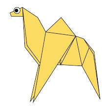
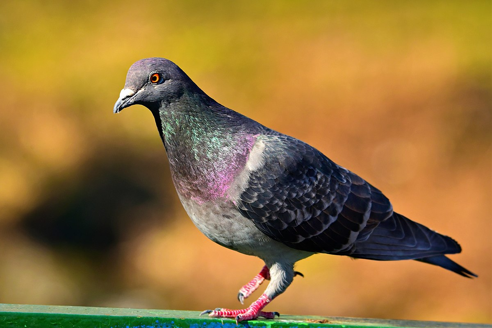
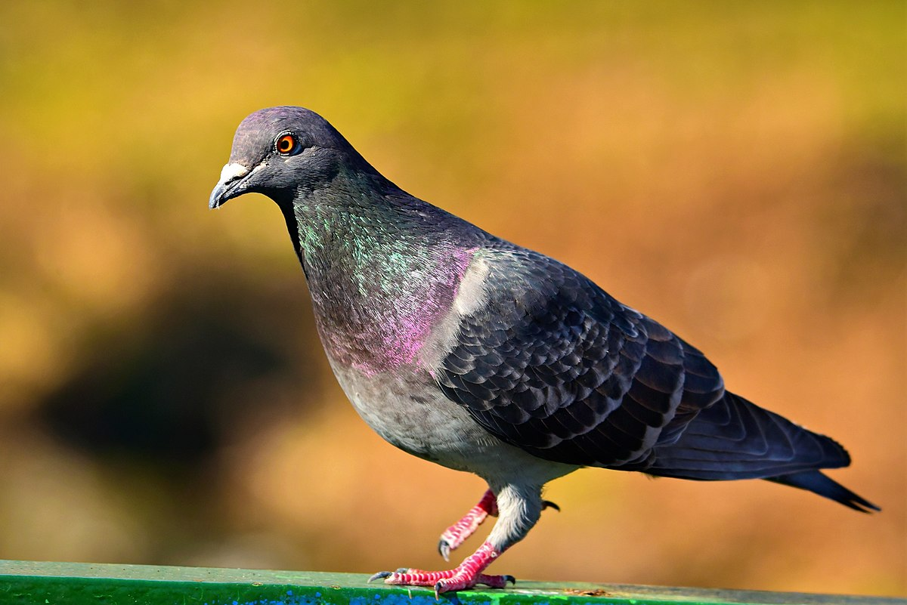
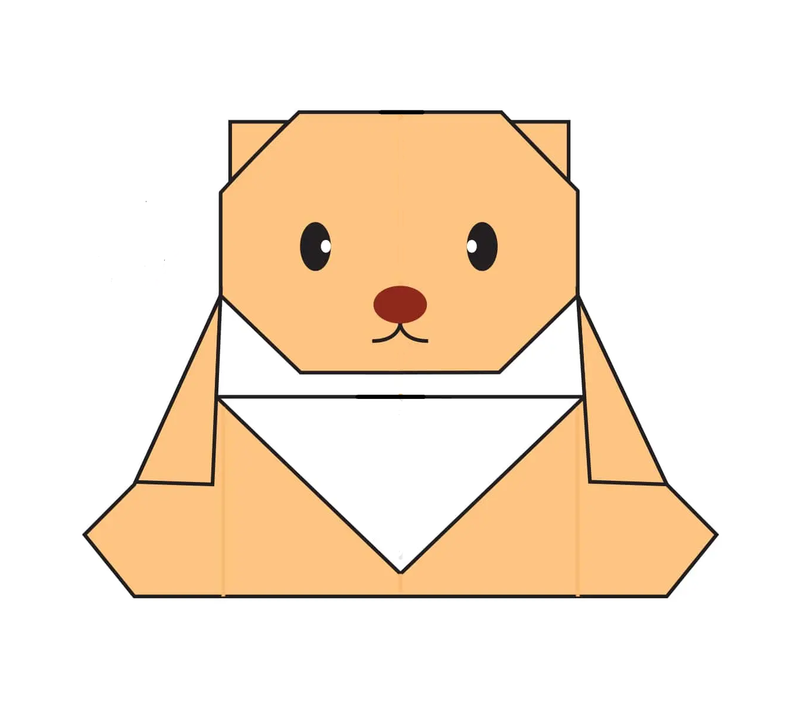
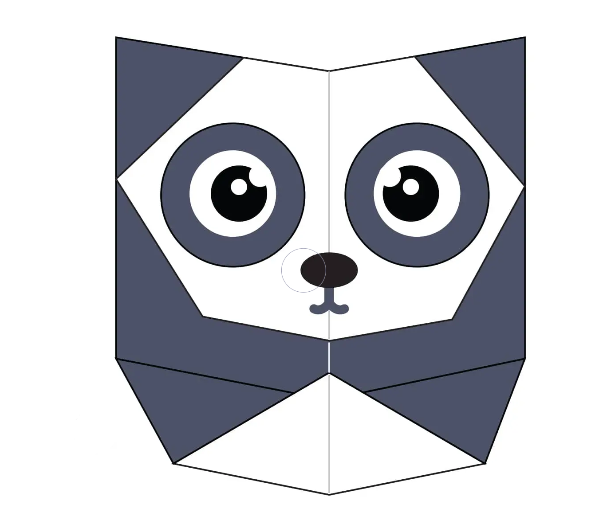
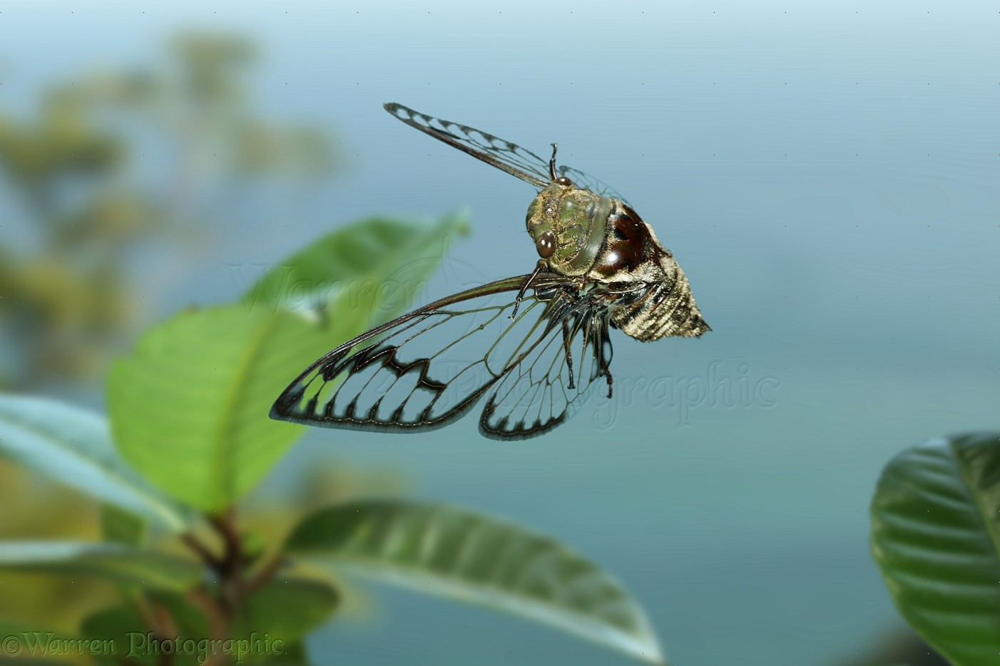
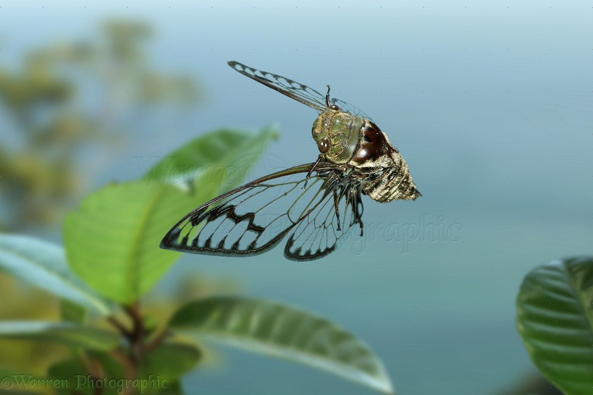

Origami designs
Welcome to Aahan's origami page.
Click on an image with a origami to see it's instructions about how to be made. Click on an image with a real life picture to see it's video in YouTube about how to be made


Interesting facts about Camel:
- Camel's ears are furry
- Camels can move easily across the sand because of it's specially designed feet
- When they find water, they will drink as much as possible


Interseting facts about Chameleon:
- Chamelions are reptiles that are part of the iguana suborder
- Changing skin color is an important part of communication among chemeleons
- Most chameleons have a prehensile tail that they use to wrap around tree branches
 

Interseting facts about Pigeon:
- Pigeons are incredible complex and intelligent animals
- Pigeons are renowned for their outstanding navigational abilities
- Pigeons have excellent hearing abilities

Interseting facts about Teddy Bear:
- Teddy bears benefit children in their development because it can reduce anxiety and stress
- Teddy bears have a depth of character that other toys don't have
- Many adults still have fond memories of their own teddy bears they loved as children.


Interseting facts about Panda:
- Giant pandas are good at climbing trees and can also swim
- Pandas have so many fans because they look cute
- They spend a lot of their day eating and bamboo is critical to their diet
 

Interseting facts about Flying-Cicada:
- Cicadas have been used as money in folk medecine and to forecast the weather
- Cicadas can survive a huge fall as babies
- Most of them have red-orange eyes